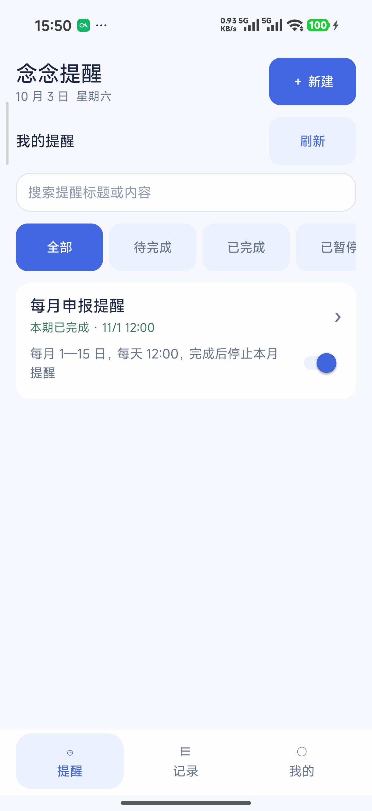
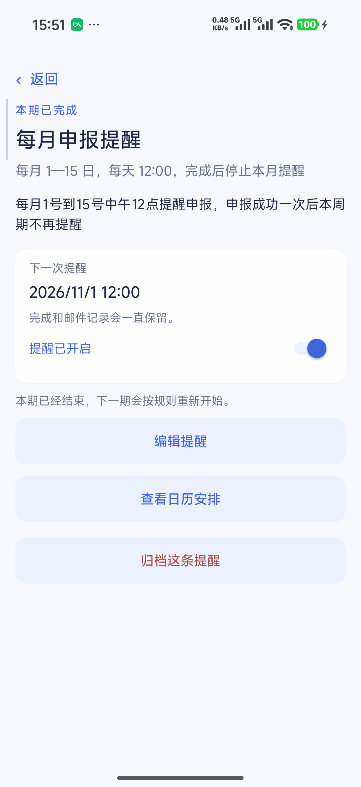
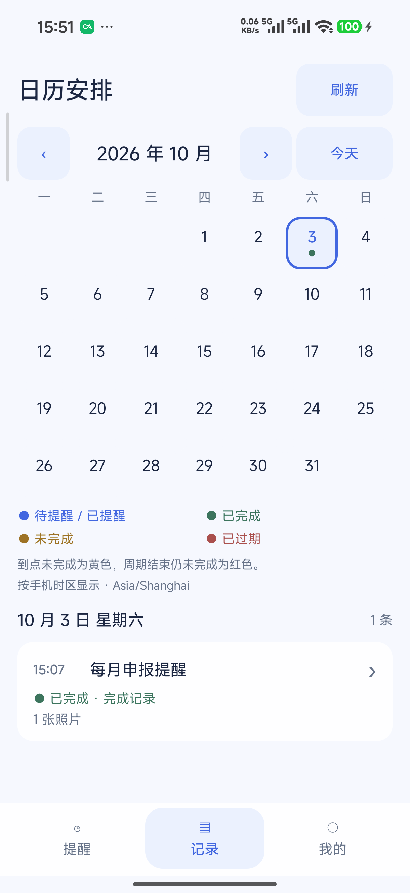
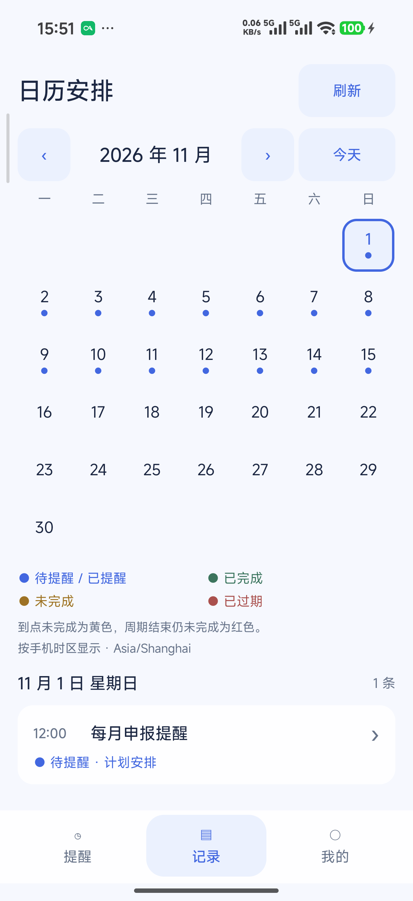

给总在心里惦记的小事
做完这一次，
这个月就放心了。
一句话安排邮件提醒。
完成本月就停，下个月再继续。
✓ 自己定规则，做完留记录。
在手机上，真实的一条提醒 1.2.0

实机首页局部 · 点图查看原尺寸
✓本期已完成下一次提醒：11 月 1 日 12:00
01 / 一句话，安排好
不用先研究一页设置。
“每月 1—15 日，中午 12 点提醒申报。
完成后，这个月就不再提醒。示例输入
看清草稿里的三件事什么时候每月 1—15 日
几点提醒每天 12:00
何时停止本期完成一次就停止
AI 生成可编辑草稿，也可以手动创建。这里展示规则含义，不是一次 AI 实测结果。
02 / 看一条真实提醒，如何跨月
本月办完。
下月，
安排还在。
同一条月度提醒，
在手机里看清规则、完成与下期安排。

实机 / 提醒详情什么时间提醒，
什么时间停。
每月 1—15 日
每天 12:00
完成后停止本月提醒
规则和下一次时间，
在详情里直接看清。

实机 / 本月日历这件事，
本月已经办过。
10 月 3 日 · 15:07
已完成，留有记录。
4—15 日，
不再显示后续待提醒计划。

实机 / 下月日历下一期，
继续提醒你。
11 月 1 日 · 12:00
下一次提醒已安排。
1—15 日的蓝点，
是下个月的待提醒计划。
1.2.0 实机截图局部 · 点击左侧步骤切换，点图查看原尺寸
03 / 完成记录，随时回看
做过的事，日历里找得到。
来自手机上的完成记录
1.2.0 实机日历局部 · 点图查看原尺寸
10 月 3 日 · 15:07已完成 · 1 张照片
↗完成时可直接确认，也可附文字或照片。
1.2.0 实机记录局部 · 照片正文未展开
04 / 用邮件，把提醒送过来
手机退出应用，
服务器仍然记着。
保存规则→
发送邮件→
留点心思，
给提醒之外的事。
念念提醒 · 一句话安排，做完留档。
01 / 部署服务先让提醒有个家。
自行部署服务器并配置 SMTP。
使用 AI 建提醒，还需配置 AI 接口。
02 / 安装应用连上自己的服务器。
Android 8.0 及以上。
填服务器地址，用邮箱验证码登录。
03 / 安排第一件事从总忘记的小事开始。
用一句话生成草稿，也能手动创建。
检查规则并保存，让念念开始提醒。
首页、提醒详情和日历来自 1.2.0 实机；AI 建任务及邮件流程为讲解示意。未提供公开下载链接。